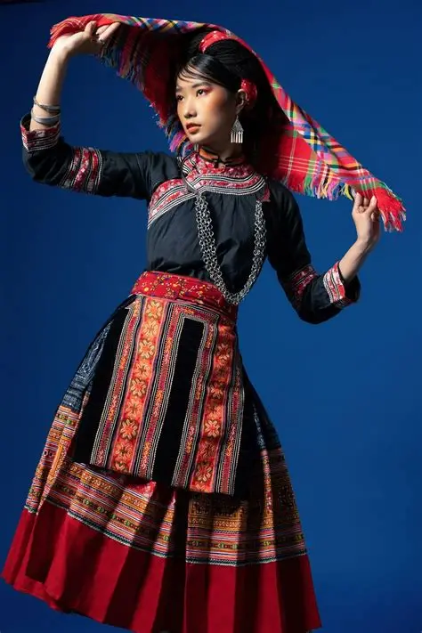
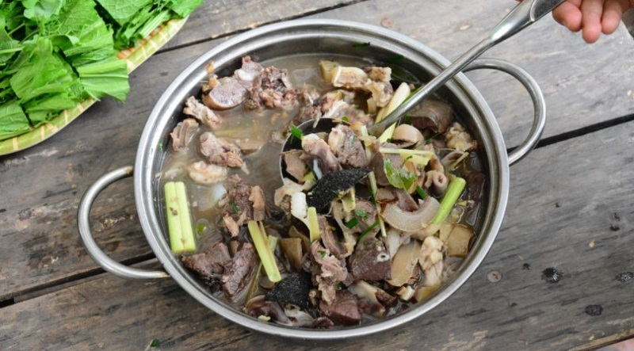
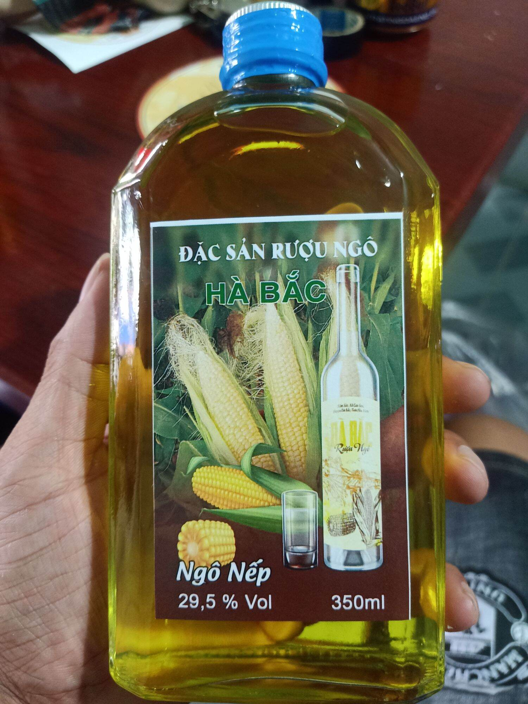

Khám phá văn hóa truyền thống của người Việt

Trang phục người H'Mông nổi bật với màu sắc rực rỡ, hoa văn thổ cẩm tinh xảo và kỹ thuật thêu thủ công truyền thống.
Phụ nữ H'Mông thường mặc váy xòe nhiều nếp, áo thêu họa tiết và đeo trang sức bạc.
Diễn ra sớm hơn Tết Nguyên Đán của người Kinh.
Cầu phúc, cầu may và sức khỏe cho cộng đồng.
Nhiều hoạt động văn hóa và trò chơi dân gian.
Nhạc cụ truyền thống nổi tiếng gắn liền với đời sống tinh thần người H'Mông.
Loại hình nghệ thuật đặc sắc thường xuất hiện trong các lễ hội.


Ẩm thực H'Mông mang đậm hương vị núi rừng Tây Bắc, gắn liền với ngô, thịt hun khói và các loại gia vị địa phương.

 Dân tộc H'Mông
Dân tộc H'Mông